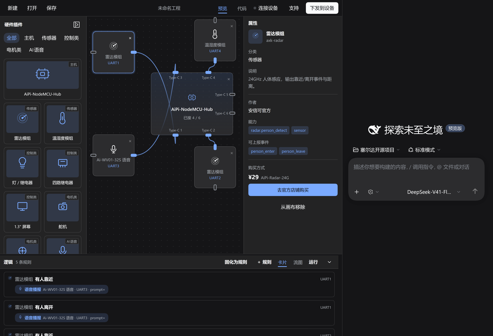
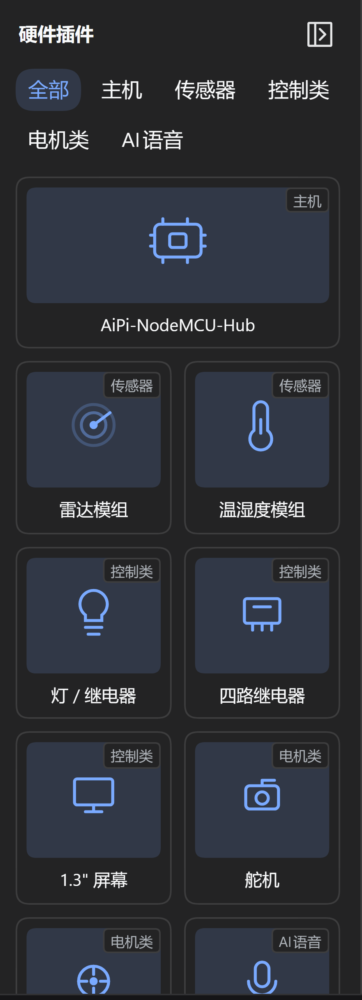
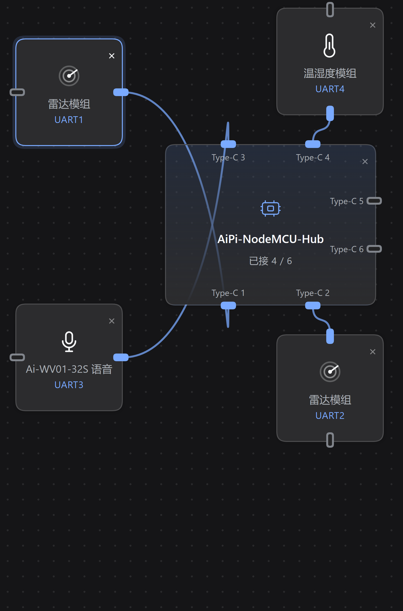
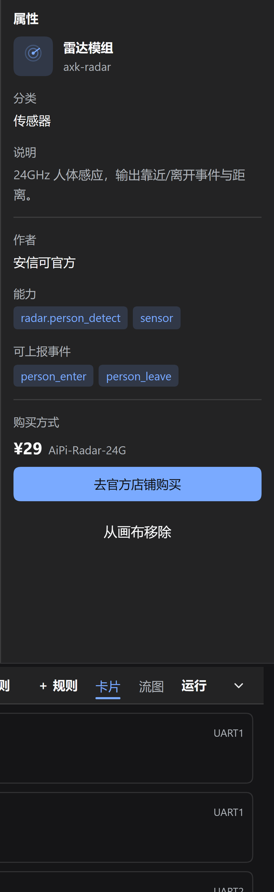
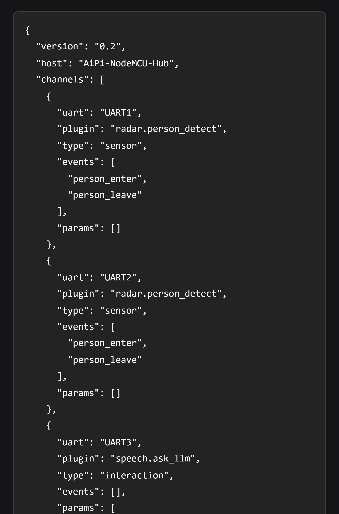
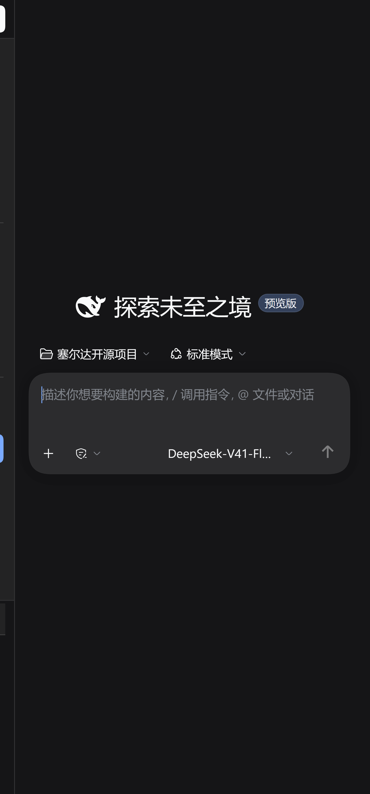

界面按「左选材、中编排、右看懂、下预览」组织，一屏之内完成全部工作，不需要切换页面：

| 区域 | 作用 |
|---|---|
| 顶部工具栏 | 新建 / 打开 / 保存、工程名（双击改名）、预览·代码切换、连接设备、支持、下发到设备 |
| 左侧插件库 | 按分类浏览硬件插件，拖到画布使用；可折叠成窄条 |
| 中间画布 | 主机底座 + 6 路 Type-C 接口，插件插上去即成接线 |
| 右侧属性 | 选中节点后显示能力、事件、参数、作者与购买信息 |
| 底部逻辑 | 把接线翻译成「谁触发、做什么」，可切换卡片 / 流图、可运行仿真 |
| 最右会话 | 内嵌 DSH 原生会话，新对话时是官方的欢迎屏 |
插件库是工作台的「选材区」，承载两类东西：唯一的主机底座和可插拔的功能插件。

画布是产品的核心心智：一块主机底座 + 六个 Type-C 接口，插件插上去就等于完成了物理接线。

| 能力 | 说明 |
|---|---|
| 通道分配 | 插件插入时自动占用最小的空闲 UART（1–6），移除即释放；通道满了会明确提示 |
| 自动摆放 | 按接口方向生成候选位，避开已有节点与画布边界，不会堆在左上角 |
| 朝向与连线 | 插件自动转向对应接口，连线沿接口法线走贝塞尔曲线，颜色随状态变化 |
| 选中与删除 | 点选节点高亮，Delete 或节点右上角 × 删除；选中连线可断开 |
| 主机唯一性 | 主机会话中枢只允许一个，重复添加会被拒绝 |
说明：主机是「底座」语义，不参与逻辑连线；它负责把六路 UART 上的插件编排成一台设备。
选中任意节点，右侧给出「这是什么、能做什么、怎么买」的信息，避免用户为查一个参数跳出工作台。

画布只表达「接线」，真正要下发的是「行为」。逻辑预览把接线翻译成人能读懂、也能改的规则。
| 能力 | 说明 |
|---|---|
| 自动推断 | 未编辑时，按「有事件上报的通道 → 有参数下发的通道」自动生成规则，零配置先看到结果 |
| 固化为规则 | 一键把推断结果转成可编辑数据，写入工程文件 |
| 增删改 | ＋规则：选触发通道 / 事件 / 执行通道；✎ 编辑参数；× 删除 |
| 参数编辑 | 按插件能力渲染控件：开关、数字、下拉、文本，杜绝非法输入 |
| 双向定位 | 点规则卡片，画布上对应插件同时高亮 |
| 可调高度 | 上沿可上下拖动，双击复位 |

DSL 是「接线 + 行为」的最终产物，也是下发与回读的依据：
channels：每路 UART 上的插件、能力、事件与参数rules：when{uart,event} → then[{uart,action,args}]| 能力 | 说明 |
|---|---|
| 新建 / 打开 / 保存 | 工具栏三个按钮，支持 Ctrl+S / Ctrl+O / Ctrl+N |
| 工程文件 | .aipi（JSON）：节点、视角、规则、设备状态，可版本升级 |
| 自动保存 | 改动后 900ms 静默保存；浏览器刷新后自动恢复，且记住文件句柄 |
| 降级保存 | 不支持文件系统 API 的环境自动退回下载，不阻塞流程 |
| 改名与脏标记 | 工程名双击可改，未保存时标题带 ● |

价值在于「边聊边做」：用户可以直接说「加一个雷达和灯，有人经过就开灯」，由 DSH 理解并落到画布与规则上。
工作台不只给人用，也向 DSH 开放了一组工具，AI 可以完整走完「搭画布 → 写规则 → 校验 → 编译 → 下发」：
| 工具 | 作用 |
|---|---|
workbench_state | 读画布：节点、UART 占用、规则、插件目录 |
workbench_add_plugin | 放插件到画布（自动找空闲通道） |
workbench_remove_plugin | 移除插件并释放通道 |
workbench_set_rules | 整体替换逻辑规则 |
workbench_validate | 静态校验，返回问题清单 |
workbench_compile | 编译成下发 DSL（含规则） |
workbench_simulate | 只读仿真，返回执行步骤 |
workbench_save_project / open_project | 读写 .aipi 工程 |
workbench_serial_ports / push / serial_read / serial_close | 枚举串口、下发 AIPI 帧、回读 self-test |
下发帧格式：'AIPI' | 版本 | 类型 | 长度 | JSON 负载 | 校验和，打包与解包有单元级往返校验。
<html lang>，中英双语即时切换（含导轨名与提示）。| 阶段 | 内容 | 状态 |
|---|---|---|
| 已完成 | 插件库、画布编排、属性、规则编辑、仿真、代码视图、工程读写、内嵌会话、Agent 工具与串口下发 | 可用 |
| 下一步 | 真机 self-test 回读与「预期 vs 实际」对比；规则冲突检测 | 待硬件协议 |
| 规划中 | 多主机 / 多设备工程、插件市场（在线安装）、更丰富的流图交互 | 未开始 |
已知限制：
① 会话顶部的「会话标题 / 模式选择器」属于 DSH 会话根组件，插件侧无法取得，因此内嵌会话只呈现内容区与原生 welcome；
② 真机下发依赖 serialport（可选依赖），未安装时串口类工具会给出明确错误而不影响其余功能。
本报告基于当前代码仓库实际界面逐屏截图生成，截图脚本：scripts/report-shots.mjs。